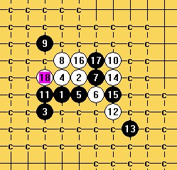

how to white win?
首页
五子棋交流
#1 how to white win? 作者：t周 发表时间：2009-2-8 15:40:12
=======上图对应的爱五子棋谱代码如下，以便你拆解：========
h8i9g7h9i8j8j9h10g11k10g8k7l6k9k8i10j10
======================================================
#2 Re:how to white win? 作者：无尽 发表时间：2009-2-8 17:51:00
=======上图对应的爱五子棋谱代码如下，以便你拆解：========
h8i9g7h9i8j8j9h10g11k10g8i10j10k7l6k9k8g9f8e8e9h6l10j11i12l7j7l11k11k12l13n9m10l9
======================================================
#3 Re:how to white win? 作者：牧羊犬 发表时间：2009-2-8 18:36:08
黑不防
=======上图对应的爱五子棋谱代码如下，以便你拆解：========
h8i9g7h9i8j8j9h10g11k10g8k7l6k9k8i10j10j11g9g10i7k12l13k11k13i11
======================================================黑防守
=======上图对应的爱五子棋谱代码如下，以便你拆解：========
h8i9g7h9i8j8j9h10g11k10g8k7l6k9k8i10j10j11g9g10i12m11
======================================================
=======上图对应的爱五子棋谱代码如下，以便你拆解：========
h8i9g7h9i8j8j9h10g11k10g8k7l6k9k8i10j10j11g9g10k12i12h13i11i13e10
======================================================
#4 Re:how to white win? 作者：无尽 发表时间：2009-2-8 19:06:15
=======上图对应的爱五子棋谱代码如下，以便你拆解：========
h8i9g7h9i8j8j9h10g11k10g8i10j10k7l6k9k8j11h6
======================================================3L,18 black win
#5 Re:how to white win? 作者：牧羊犬 发表时间：2009-2-8 19:19:51
=======上图对应的爱五子棋谱代码如下，以便你拆解：========
h8i9g7h9i8j8j9h10g11k10g8i10j10k7l6k9k8j11h6f8g9g10i7f10e10j6i5h7j4k3i4i6g5g6k5i3l4
======================================================的确，黑胜……
#6 Re:how to white win? 作者：无尽 发表时间：2009-2-8 19:21:14
5L 21－32 easy
#7 Re:Re:how to white win? 作者：牧羊犬 发表时间：2009-2-8 19:27:58
引用：
原文由 无尽 发表于 2009-2-8 19:21:14 :
5L 21－32 easy
不是很懂…………
#8 Re:how to white win? 作者：牧羊犬 发表时间：2009-2-8 19:35:23
=======上图对应的爱五子棋谱代码如下，以便你拆解：========
h8i9g7h9i8j8j9h10g11k10g8i10j10k7l6k9k8g9f8e8e9h6i7
======================================================那这个黑23如何胜
#9 Re:how to white win? 作者：潇洒 发表时间：2009-2-8 19:45:33
=======上图对应的爱五子棋谱代码如下，以便你拆解：========
h8i9g7h9i8j8j9h10g11k10g8i10j10k7l6k9k8g9f8e8e9h6i7j11
======================================================一手杀
#10 Re:how to white win? 作者：无尽 发表时间：2009-2-8 19:59:12
简化写法：5L（L-楼）,21-32 21走32的位置
我2楼发的那一路是印象中最强的变化，其他不难。
#11 Re:how to white win? 作者：26 发表时间：2009-2-8 20:28:04

我也来帮一帮韩国朋友。他为什么不会汉语啊？